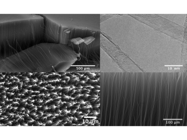

-
Hao, J.; Babu, D. J.; Liu, Q.; Schouwink, P. A.; Asgari, M.; Queen, W. L.; Agrawal, K. V. Mechanistic Study on Thermally Induced Lattice Stiffening of ZIF-8. Chem. Mater. 2021.
-
Huang, S.; Li, S.; Villalobos, L. F.; Dakhchoune, M.; Micari, M.; Babu, D. J.; Vahdat, M. T.; Mensi, M.; Oveisi, E.; Agrawal, K. V. Millisecond Lattice Gasification for High-Density CO2- and O2-Sieving Nanopores in Single-Layer Graphene. Sci. Adv. 2021 , 7 (9), eabf0116.
-
Liu, Q.; Babu, D. J.; Hao, J.; Vahdat, M. T.; Campi, D.; Agrawal, K. V. Metal Soap Membranes for Gas Separation. Advanced Functional Materials 2021, 31 (1), 2005629.
-
Hao, J.; Babu, D. J.; Liu, Q.; Chi, H.-Y.; Lu, C.; Liu, Y.; Agrawal, K. V. Synthesis of High-Performance Polycrystalline Metal–Organic Framework Membranes at Room Temperature in a Few Minutes. J. Mater. Chem. A 2020 , 8 (16), 7633–7640.

-
Huang, S.; Villalobos, L. F.; Babu, D. J.; He, G.; Li, M.; Züttel, A.; Agrawal, K. V. Ultrathin Carbon Molecular Sieve Films and Room-Temperature Oxygen Functionalization for Gas-Sieving. ACS Applied Materials & Interfaces 2019 , 11 (18), 16729–16736.
- Dixon, D.; Babu, D. J.; Bhaskar, A.; Bruns, H.-M.; Schneider, J. J.; Scheiba, F.; Ehrenberg, H. Tuning the Performance of Vanadium Redox Flow Batteries by Modifying the Structural Defects of the Carbon Felt Electrode. Beilstein J. Nanotechnol. 2019 , 10 (1), 1698–1706.
-
Babu, D. J.; He, G.; Villalobos, L. F.; Agrawal, K. V.
Crystal Engineering of Metal–Organic Framework Thin Films for Gas Separations.
ACS Sustainable Chemistry & Engineering 2019 , 7 (1), 49–69.

-
Babu, D. J.; He, G.; Hao, J.; Vahdat, M. T.; Schouwink, P. A.; Mensi, M.; Agrawal, K. V.
Restricting Lattice Flexibility in Polycrystalline Metal–Organic Framework Membranes for Carbon Capture.
Advanced Materials 2019 , 31 (28), 1900855.

- Thomson, M. D.; Zouaghi, W.; Meng, F.; Wiecha, M. M.; Rabia, K.; Heinlein, T.; Hussein, L.; Babu, D.; Yadav, S.; Engstler, J.; Schneider, J. J.; Nicoloso, N.; Rychetský, I.; Kužel, P.; Roskos, H. G. Dielectric Properties of Vertically Aligned Multi-Walled Carbon Nanotubes in the Terahertz and Mid-Infrared Range. Journal of Physics D: Applied Physics 2018
- He, G.; Babu, D. J.; Agrawal, K. V. Electrophoretic Crystallization of Ultrathin High-Performance Metal-Organic Framework Membranes.. Journal of Visualized Experiments2018 , 138, e58301–e58301.
-
Babu, D. J.; Puthusseri, D.; Kühl, F. G.; Okeil, S.; Bruns, M.; Hampe, M.; Schneider, J. J.
SO2 Gas Adsorption on Carbon Nanomaterials: A Comparative Study.
Beilstein Journal of Nanotechnology 2018 , 9, 1782–1792.

- Weidler, N.; Babu, D. J.; Martinaiou, I.; Paul, S.; Wagner, S.; Shahraei, A.; Janßen, A.; Stark, R. W.; Schneider, J. J.; Kramm, U. I. Effect of Rf-Plasma Treatment on the Activity and Selectivity of Me-N-C Electrocatalysts for the Oxygen Reduction Reaction.. ECS Transactions 2017, 80 (8), 691–700.
-
Puthusseri, D.; Babu, D. J.; Okeil, S.; Schneider, J. J.
Gas Adsorption Capacity in an All Carbon Nanomaterial Composed of Carbon Nanohorns and Vertically Aligned Carbon Nanotubes.
Physical Chemistry Chemical Physics 2017 , 19 (38), 26265–26271.
- Patzsch, J.; Babu, D. J.; Schneider, J. J. Hierarchically Structured Nanoporous Carbon Tubes for High Pressure Carbon Dioxide Adsorption. Beilstein Journal of Nanotechnology 2017 , 8, 1135–1144.
-
Babu, D. J.; Schneider, J. J.
Gas Adsorption Studies of CO2 in Carbon Nanomaterials: A Case Study of Vertically Aligned Carbon Nanotubes. .
Chemie Ingenieur Technik2017 , 89 (10), 1273–1287.

-
Babu, D. J.; Mail, M.; Barthlott, W.; Schneider, J. J.
Superhydrophobic Vertically Aligned Carbon Nanotubes for Biomimetic Air Retention under Water (Salvinia Effect).
Adv. Mater. Interfaces 2017 , 4 (13), 1700273.

-
Babu, D. J.; Bruns, M.; Schneider, R.; Gerthsen, D.; Schneider, J. J.
Understanding the Influence of N-Doping on the CO2 Adsorption Characteristics in Carbon Nanomaterials.
J. Phys. Chem. C 2017 , 121 (1), 616–626.
-
Babu, D. J.; Bruns, M.; Schneider, J. J.
Unprecedented CO2 Uptake in Vertically Aligned Carbon Nanotubes.
Carbon 2017 , 125, 327–335.
- Dixon, D.; Babu, D. J.; Langner, J.; Bruns, M.; Pfaffmann, L.; Bhaskar, A.; Schneider, J. J.; Scheiba, F.; Ehrenberg, H. Effect of Oxygen Plasma Treatment on the Electrochemical Performance of the Rayon and Polyacrylonitrile Based Carbon Felt for the Vanadium Redox Flow Battery Application. Journal of Power Sources 2016 , 332, 240–248.
-
Babu, D. J.; Kühl, F. G.; Yadav, S.; Markert, D.; Bruns, M.; Hampe, M. J.; Schneider, J. J.
Adsorption of Pure SO$_2$ on Nanoscaled Graphene Oxide.
RSC Adv. 2016 , 6, 36834–36839.

-
Babu, D. J.; Herdt, T.; Okeil, S.; Bruns, M.; Staudt, R.; Schneider, J. J.
Bud Type Carbon Nanohorns: Materials for High Pressure CO2 Capture and Li-Ion Storage..
Journal of Materials Chemistry A 2016 , 4 (37), 14267–14275.

-
Rahimi, M.; Babu, D. J.; Singh, J. K.; Yang, Y.-B.; Schneider, J. J.; Müller-Plathe, F.
Double-Walled Carbon Nanotube Array for CO 2and SO 2 Adsorption.
The Journal of Chemical Physics 2015 , 143 (12), 124701–124701.

-
Babu, D. J.; Yadav, S.; Heinlein, T.; Cherkashinin, G.; Schneider, J. J.
Carbon Dioxide Plasma as a Versatile Medium for Purification and Functionalization of Vertically Aligned Carbon Nanotubes. .
J. Phys. Chem. C 2014 , 118 (22), 12028–12034.

-
Babu, D. J.; Varanakkottu, S. N.; Eifert, A.; de Koning, D.; Cherkashinin, G.; Hardt, S.; Schneider, J. J. Inscribing Wettability Gradients onto Superhydrophobic Carbon Nanotube Surfaces.
Adv. Mater. Interfaces 2014 , 1 (2), 1300049–1300049.

- Rahimi, M.; Singh, J. K.; Babu, D. J.; Schneider, J. J.; Müller-Plathe, F.Understanding Carbon Dioxide Adsorption in Carbon Nanotube Arrays: Molecular Simulation and Adsorption Measurements. J. Phys. Chem. C 2013 , 117 (26), 13492–13501.
-
Babu, D. J.; Lange, M.; Cherkashinin, G.; Issanin, A.; Staudt, R.; Schneider, J. J. Gas Adsorption Studies of CO2 and N2 in Spatially Aligned Double-Walled Carbon Nanotube Arrays.
Carbon 2013 , 61, 616–623.

- Babu, DeepuJ.; Darbandi, AzadJ.; Suffner, J.; Bhattacharya, S. S.; Hahn, H. Flame Spray Synthesis of Nano Lanthanum Strontium Manganite for Solid Oxide Fuel Cell Applications. Transactions of Indian Institute of Metals 2011 , 64 (1–2), 181–184.